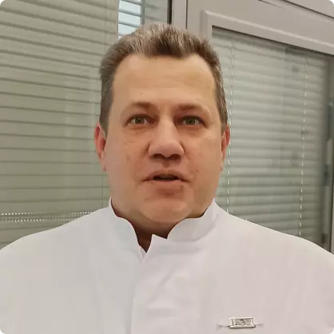

<section class="department">
    <div class="container">
        <div class="bread-crumbs">
            <a href="./index.html">Главная</a>
            <a href="./about-center-page.html">О научном центре</a>
            <a href="./about-center-page.html#struktura-GNCDK">Структура ГНЦДК</a>
            <a href="./sergev-posad-page.html">Сергиево-Посадский филиал (СПФ ФГБУ «ГНЦДК» Минздрав России)</a>
        </div>
        <div class="title">Сергиево-Посадский филиал (СПФ ФГБУ «ГНЦДК» Минздрав России)</div>
        <div class="department__wrapper">
            <div class="department__left">
                <div class="department__main-employee">
                    <div class="department__main-employee-img">
                        
                    </div>
                    <div class="department__main-employee-name">Ильин Андрей Анатольевич</div>
                    <div class="department__main-employee-job">
                        Директор Сергиево-Посадского филиала ФГБУ «ГНЦДК» Минздрава России
                    </div>
                </div>
            </div>
            <div class="department__right">
                <div class="menu__buttons">
                    <a href="#" class="menu__button all-btn__blue"
                        >Отделение <br />
                        клинической лепрологии</a
                    >
                    <a href="#" class="menu__button all-btn__blue">Площадка</a>
                </div>
                <div class="department__text">
                    <p>
                        Сергиево-Посадский филиал ФГБУ «ГНЦДК» Минздрава России является специализированным
                        лечебно-профилактическим учреждением и организационно-методическим центром по борьбе с лепрой в
                        зоне, установленной Минздравом России, задачами которого является проведение активной
                        профилактики лепры, организации амбулаторного лечения больных по месту жительства, тщательного
                        диспансерного наблюдения за ними и контактными лицами, обеспечение профессионального ухода за
                        больными, находящимися на стационарном лечении и оказания им всех видов специализированной
                        медицинской помощи.
                    </p>

                    <div>
                        <p>Основными направлениями работы учреждения являются:</p>
                        <ul>
                            <li>
                                оказание высококвалифицированной диагностической, лечебной, консультативной и
                                реабилитационной помощи пациентам с лепрой;
                            </li>
                            <li>разработка и осуществление профилактических мероприятий по лепре.</li>
                        </ul>
                    </div>
                </div>

                <div class="department__block">
                    <div class="department__block-title">Адрес</div>
                    <address class="department__block-text">
                        141321, Московская область, Сергиево – Посадский район, п. Зеленая Дубрава
                    </address>
                </div>
            </div>
        </div>
    </div>
</section>
